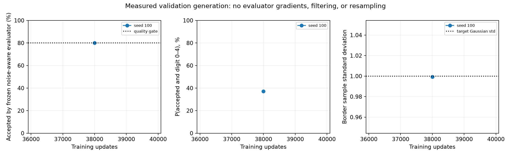

Inspect fixed-noise center crops
Each grid uses fixed indices 0–63. × indicates rejection by the frozen noise-aware evaluator.
FLOW STUDY · GENERATOR REPAIR · MEASURED DATA
Small shared spatial U-Net residual plus the analytic Gaussian velocity field. Spatial skip connections retain pixel-level paths; fixed mask/coordinate channels specify geometry. Global self-attention at 14×14; base channels 32. The noise-aware evaluator is frozen. No evaluator gradients, filtering, or resampling.
paused_for_user_inspection · 427.6 GPU-process seconds
Readable report · Raw measurements · Curves CSV · Protocol
| Seed | Training updates | Accepted | Invalid | Border mean / std |
|---|
All 2,000 outputs per model remain in the denominator. The prior failed model scored 2.15% with the same evaluator.

Each grid uses fixed indices 0–63. × indicates rejection by the frozen noise-aware evaluator.
These scores establish generator feasibility only. Acceptance remains a proxy; inspect individual images and class coverage. Border marginal mean/std do not establish independence. Teacher-specific transfer requires its own paired teachers, students, and controls.